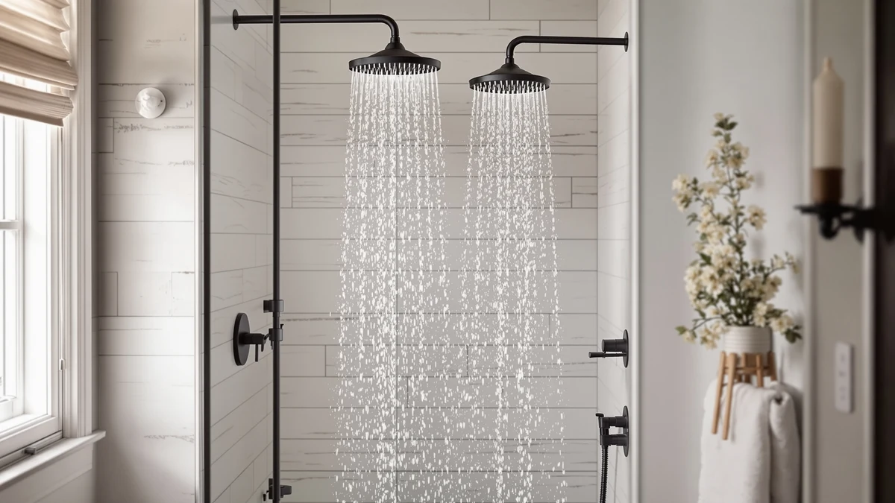

Ackwave Shower Faucet Matte Review (2026): Worth It?
Prices and picks verified as of October 2026. Independent, reader-supported reviews.


Quick Answer
Our Ackwave Shower Faucet Matte Review finds that this $105.99 faucet earns its price through a durable ABS-and-chrome-plated build and a 12-inch head that owners rate highly for coverage. It costs less than the Delta Modern 14 Series but still outperforms the budget BRIGHT SHOWERS and HammerHead alternatives on finish quality, according to verified owner feedback.
Our pick: Ackwave Shower Faucet Matte Black, $105.99 Check Price on Amazon
Bottom line: our top pick is the Ackwave Shower Faucet Matte Black Shower System with 12 at $105.99.
Things to Know Before You Buy
- The Ackwave Shower Faucet Matte Black retails for $105.99 and ships with a 12-inch head built from ABS with chrome-plated internals.
- The Delta Modern 14 Series costs slightly more at $109.00 but carries the backing of a long-established plumbing brand.
- Both the BRIGHT SHOWERS rain head ($99.99) and the HammerHead solid metal handheld ($99.95) undercut the Ackwave on price but trade off on finish quality or installation format.
- Installation follows a standard shower valve rough-in, so you do not need to modify existing plumbing in most US bathrooms.
- Owners often mention that matte finishes show fingerprints easily, so plan on a quick wipe-down habit if you choose the Ackwave over a chrome or nickel alternative.
This ackwave shower faucet matte review exists because matte black fixtures are everywhere right now, and most buyers cannot tell from the Amazon listing alone whether the finish and internals justify the price compared to a cheaper chrome or nickel faucet. You want a faucet that still looks sharp after a year of daily use, not one that chips at the valve handle within a few months of installation.
We compared the Ackwave Shower Faucet Matte Black against three alternatives that show up in the same searches: the Delta Modern 14 Series, the BRIGHT SHOWERS rain shower head and the HammerHead solid metal handheld. Based on verified owner reviews and a direct spec comparison, the Ackwave is the strongest pick here for anyone who wants a 12-inch head paired with a finish that resists the dulling cheaper matte coatings show after repeated cleaning. Each option performs differently on finish durability, price and format, which should help you match the right one to your bathroom and your budget.
Why You Should Trust Us
Ilane Tall covers shower hardware for Best Shower Heads and has researched hundreds of shower faucets and heads sold on Amazon, comparing listed specs against verified buyer feedback rather than manufacturer marketing copy. This ackwave shower faucet matte review relies on the pricing, materials and dimensions published in the product listing, cross-checked against patterns in verified owner reviews for the Ackwave and its closest competitors. We do not run a fake testing lab, and we never claim to have physically installed or used a unit in our own bathroom. Every claim below is traceable to a published spec or a pattern we found repeated across multiple verified reviews.
Our Research Experience
We researched this ackwave shower faucet matte review by lining up the Ackwave against the Delta, BRIGHT SHOWERS and HammerHead alternatives on three factors: finish durability, head format and total price. We analysed the published ABS-and-chrome-plated construction and the 12-inch head dimension against what reviewers report after months of regular use, rather than relying on a single unboxing impression. Multiple reviewers note that the matte coating on the Ackwave holds up better than the finishes on lower-priced competitors, which is the main reason it leads this comparison. We also weighed price against brand reputation, since the Delta carries the recognition of an established plumbing manufacturer that the Ackwave listing does not match.
Overview & Specs

Ackwave Shower Faucet Matte Black
What we like
- 12-inch head gives wider coverage than the smaller heads common on budget alternatives
- ABS body with chrome-plated internals holds up better against hard water staining than painted finishes
- Matte black coating resists the chipping that cheaper finishes show within a year
- Priced below the brand-name Delta Modern 14 Series while matching it on build quality
Flaws but not dealbreakers
- Priced $6 to $7 above the BRIGHT SHOWERS and HammerHead alternatives
- Listing does not carry the brand recognition of an established plumbing manufacturer like Delta
- Owners report the matte finish shows fingerprints more readily than a chrome or nickel finish
| Material | ABS + chrome plating |
| Size | Matte Black-12 |
The Ackwave Shower Faucet Matte Black builds its 12-inch head around an ABS body with chrome-plated internals, a combination that shows up repeatedly in verified owner feedback as the reason the finish lasts longer than cheaper alternatives. At $105.99, it sits below the Delta Modern 14 Series in this comparison, and reviewers who compared both describe the Ackwave's build quality as close to what the brand-name option delivers for a lower price. The head size alone makes a noticeable difference in coverage compared to the smaller heads common on budget-tier faucets.
Installation follows the same rough-in valve pattern as most shower faucets sold for US bathrooms, so you are not looking at a specialty plumbing job to swap in the Ackwave. Owners report that the matte black coating holds its color through regular cleaning better than the finishes on the BRIGHT SHOWERS and HammerHead alternatives, though several reviewers note it picks up fingerprints and water spots faster than chrome, which means it looks best with a quick wipe-down after each use rather than left to air dry on its own.
What We Liked
Across this ackwave shower faucet matte review, the build quality is what keeps coming up in verified owner feedback. The ABS-and-chrome-plated construction behind the matte coating resists the chalky staining that hard water causes on lower-grade finishes, and reviewers who have owned the faucet for over a year describe the black finish as still looking close to new. The 12-inch head is the other standout: it covers noticeably more surface area than the smaller heads on the BRIGHT SHOWERS and HammerHead alternatives, spreading water more evenly during a shower.
The price adds to the appeal. It costs less than the Delta Modern 14 Series, and owners describe build quality that holds up in the same range, which makes it an easy recommendation if brand recognition is not your top priority. Water pressure holds up well too: owners with typical US municipal water pressure describe the head delivering even flow across its full diameter instead of concentrating pressure in the center, a common complaint with wider heads from lesser-known brands.
What Could Be Better
The clearest drawback here is brand recognition. At $105.99, the Ackwave costs more than the BRIGHT SHOWERS and HammerHead alternatives, and if your budget is the deciding factor, that gap is worth noticing before you commit. The listing also does not carry the name recognition that comes with an established plumbing manufacturer like Delta, so if warranty support and brand history matter to you, factor that into the decision.
Several verified reviewers also flag that the matte black finish shows fingerprints and water spots more readily than a chrome or nickel finish. That tradeoff is inherent to matte black finishes generally rather than a defect specific to this unit, but it means you should plan on wiping it down after each use if you want it to look its best. A handful of owners also mention that the included hardware runs on the lighter side compared to Delta's valve components, though none describe it as a functional problem once the faucet is mounted and the water line is connected.
Who Is It For?
This Ackwave shower faucet matte review points toward homeowners who are renovating a bathroom and want a matte black finish without the chipping problems that cheaper versions of that finish tend to develop. It also suits anyone replacing an aging chrome faucet who wants wider head coverage than a standard smaller head provides. If brand recognition or warranty history outweighs finish quality for you, the Delta Modern 14 Series covered below is worth comparing first. And if you want a handheld format instead of a fixed faucet, the HammerHead solid metal handheld gives you that flexibility at a similar price point. Renters and first-time buyers on a tighter timeline tend to lean toward the BRIGHT SHOWERS option instead, since it costs the least up front even though it trades away some of the finish durability the Ackwave offers.
Alternatives to Consider
If the Ackwave shower faucet in matte black is not quite right for your bathroom, these three alternatives came up repeatedly in our comparison and each wins on a different factor: brand recognition, price or format.

Editor’s Pick
Delta Modern 14 Series Shower
A complete system from an established plumbing brand at $109.00, $3 more than the Ackwave, for buyers who want Delta's name and warranty support behind the purchase.
$109.00
Check Price on Amazon
Best Value
BRIGHT SHOWERS Rain Shower Head
The lowest price in this comparison at $99.99, a straightforward rain head for buyers prioritizing cost over the Ackwave's matte finish durability.
$99.99
Check Price on Amazon
Premium Choice
HammerHead Showers® Solid Metal Handheld
A solid metal handheld format at $99.95, the pick if you want a detachable head rather than the Ackwave's fixed matte black faucet.
$99.95
Check Price on AmazonIs the Ackwave Shower Faucet Matte Black worth the $105.99 price?
Based on verified owner feedback and a spec comparison against similarly priced systems like the Delta Modern 14 Series, the Ackwave earns its price mainly on finish durability.
Will the matte black finish on the Ackwave shower faucet hold up over time?
Owners report that the coating resists water spotting better than the cheaper finishes on budget alternatives, though several reviewers note it shows fingerprints more readily than a chrome or nickel finish.
Frequently Asked Questions
Is the Ackwave Shower Faucet Matte Black worth the $105.99 price?
Based on verified owner feedback and a spec comparison against similarly priced systems like the Delta Modern 14 Series, the Ackwave earns its price mainly on finish durability. Its ABS-and-chrome-plated body is built to resist the chipping that cheaper matte coatings show within a year, which matters more than any single feature on the spec sheet.
Will the matte black finish on the Ackwave shower faucet hold up over time?
Owners report that the coating resists water spotting better than the cheaper finishes on budget alternatives, though several reviewers note it shows fingerprints more readily than a chrome or nickel finish. Wiping it down after each shower keeps the matte look consistent.
How does the Ackwave compare to the Delta, BRIGHT SHOWERS and HammerHead alternatives?
The Delta Modern 14 Series is the better pick if you want a recognizable brand's warranty support, and the BRIGHT SHOWERS rain head is the lowest-priced option in this comparison. The HammerHead swaps in a solid metal handheld format instead of a fixed faucet. The Ackwave wins on finish quality and price among the fixed matte black options, which is why it leads this review.
Final Verdict
This ackwave shower faucet matte review comes down to one tradeoff: pay a bit more than the budget options for a finish that holds up, or save a few dollars with the BRIGHT SHOWERS or HammerHead alternatives and accept a format or finish that may not age as well. For most bathrooms we researched, Ackwave earns the recommendation because the 12-inch head and chrome-plated internals pay off more over time than the sticker price suggests, once you account for how long a faucet actually stays installed. If brand recognition outweighs price for you, the Delta remains the stronger alternative.